构建 a367ba9dd96d · 源码 a40403857df58e2b2cff345bd6d2da34b6711111 · 观感待审。
派生样件沿双侧膝至踝轴各延长 20 mm。鞋的几何和脚部绑定重新适配，上衣、短裤保留原 GLB 字节并使用派生身体专属 fit。其他部位变形、女性、袜和旧 30 秒舞仍须各自验证。
本版显式配置源鞋底平面与模型 Y 偏移。技术报告通过后，足底、坐姿与连续动作观感继续待审。开发机资料尚未完成普通电脑验证。
本版原始报告 · 源 fit · 源变形与装备依据 · 上身等价证据 · 源文件清单 · 哈希与抽帧索引
807 初版在派生身体基础模式切换时拒绝，原始报告状态为 failed-or-incomplete。 原始版本报告
778 版记录了动作技术检查，派生鞋底仍带约 −2 cm 源平面偏差，保留为鞋底对齐失败证据。 原始版本报告
778 派生身体原图 · 778 原始接触采样。本页 a367 资料独立保留其构建身份。
两条录像的加载时间不同。请各自播放，或按下方同名截图阶段对照。
| 样件 | 源平面 Y（mm） | 模型偏移 Y（mm） | 坐姿鞋底最低 Y（mm） | 坐姿衣物最小座面间距（mm） | 选中下装顶点 |
|---|---|---|---|---|---|
| 原男性 | 0.000 | 0.000 | -0.584 | 1.004 | 514 |
| 小腿 +20 mm 派生男性 | -19.450 | 19.450 | -1.196 | 1.326 | 514 |
坐姿数据取实际姿态下当前座面矩形内的顶点，单位为 mm。连续时段的三角交叉与穿透深度仍需另测，当前未作零穿模结论。
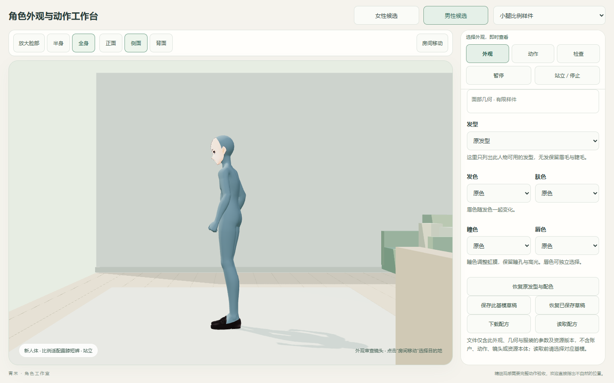
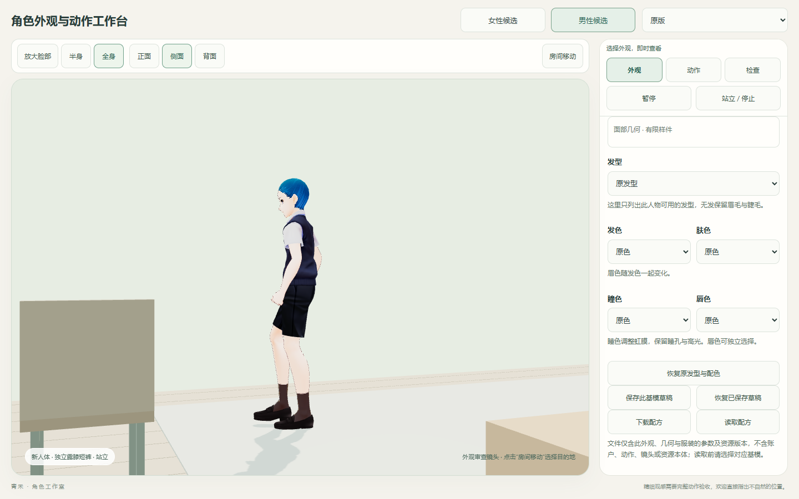
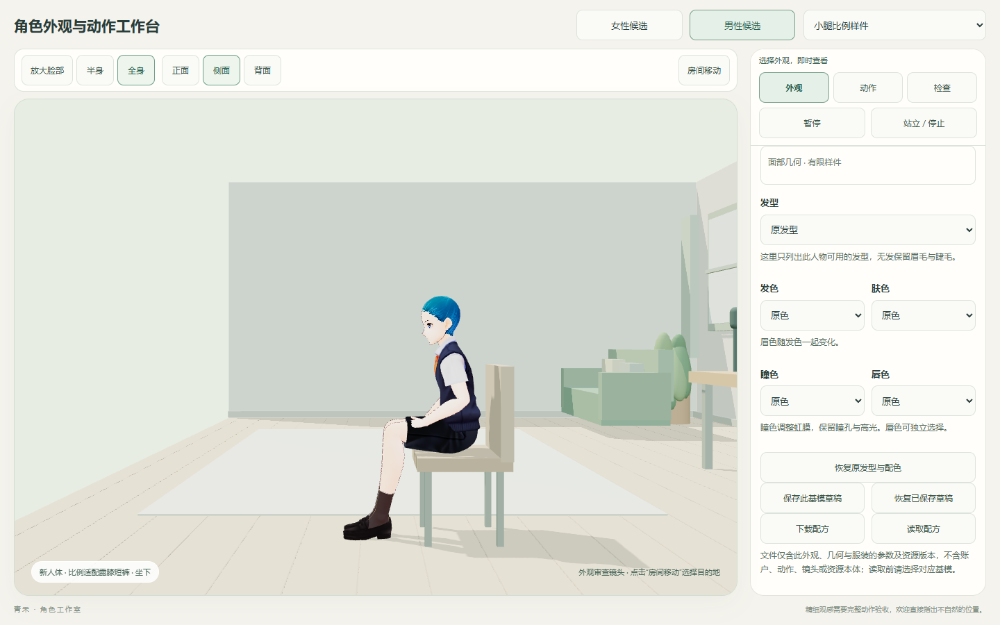
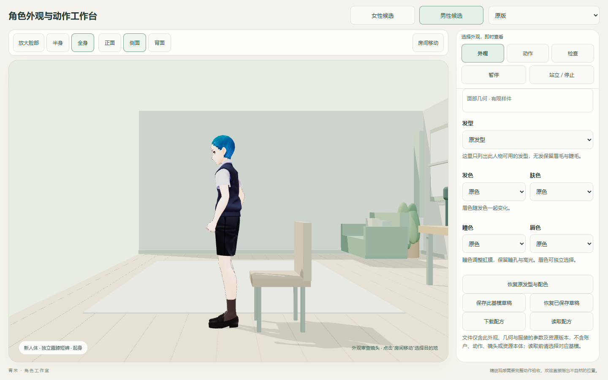
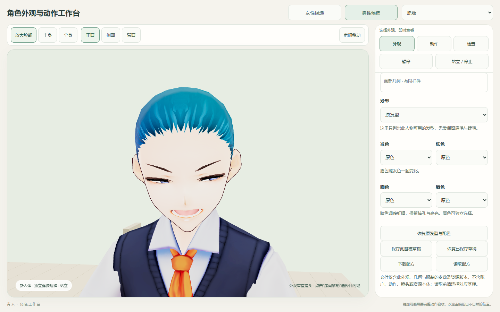
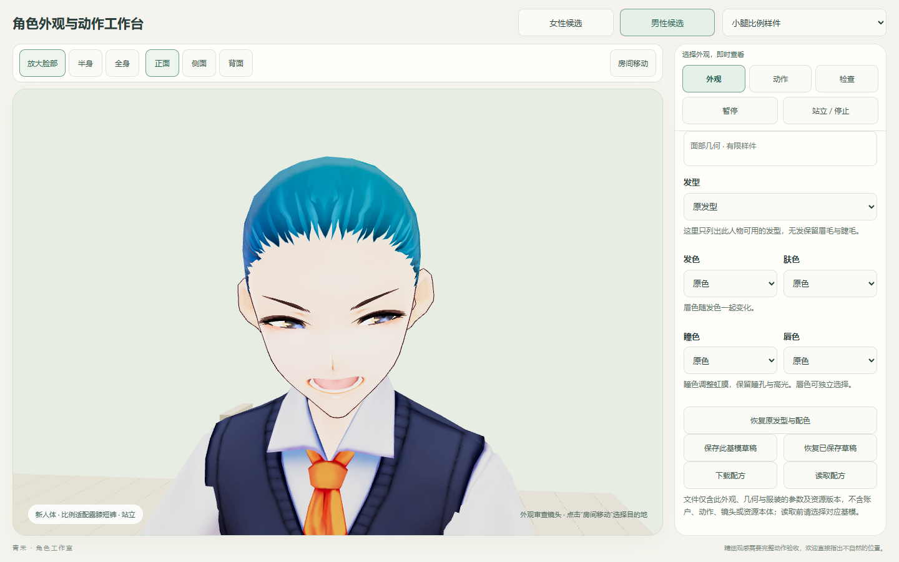
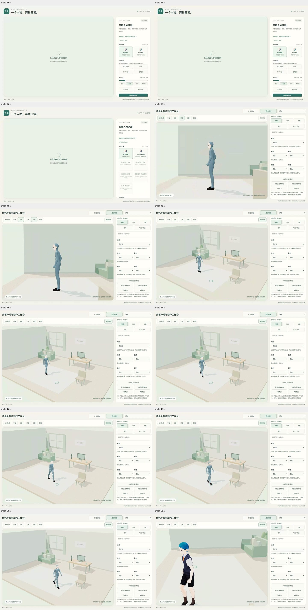
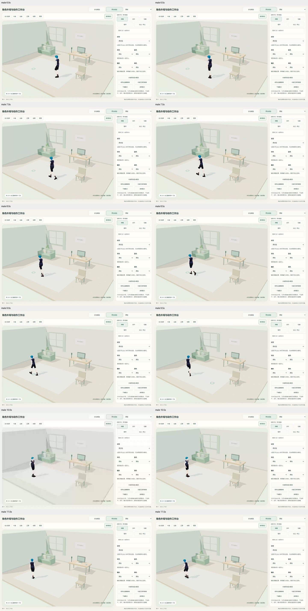
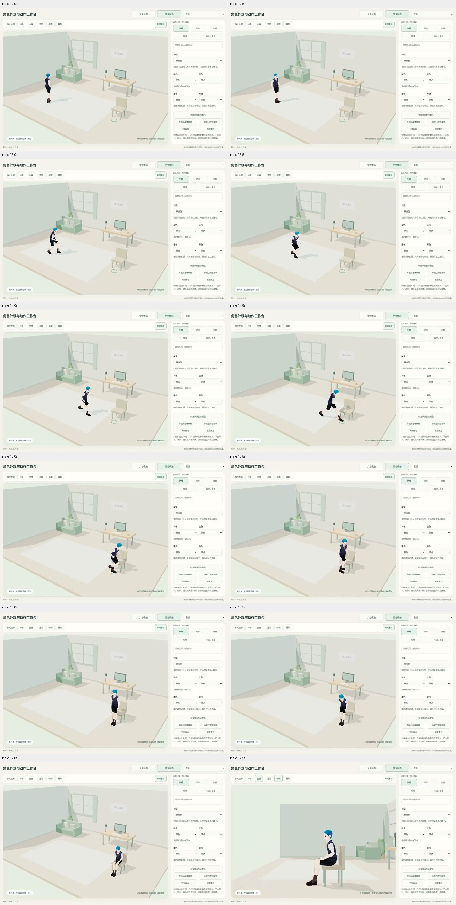
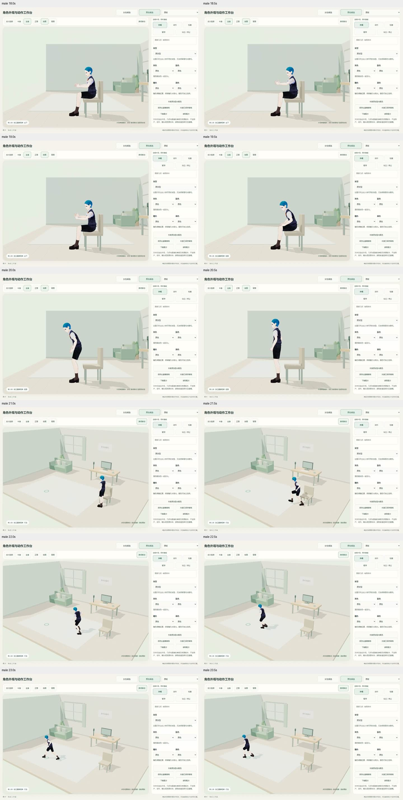
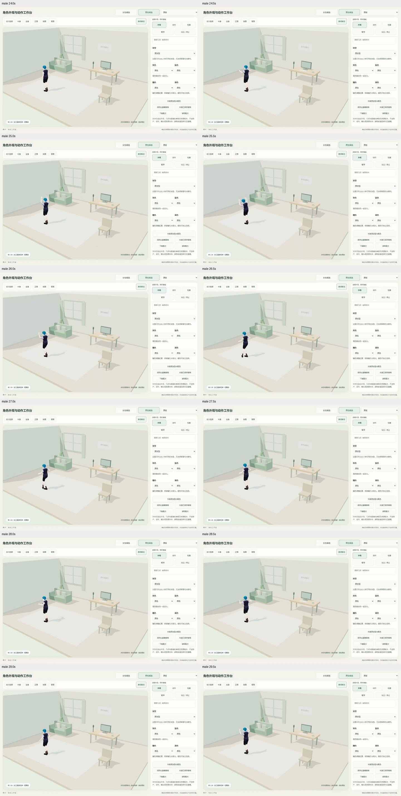
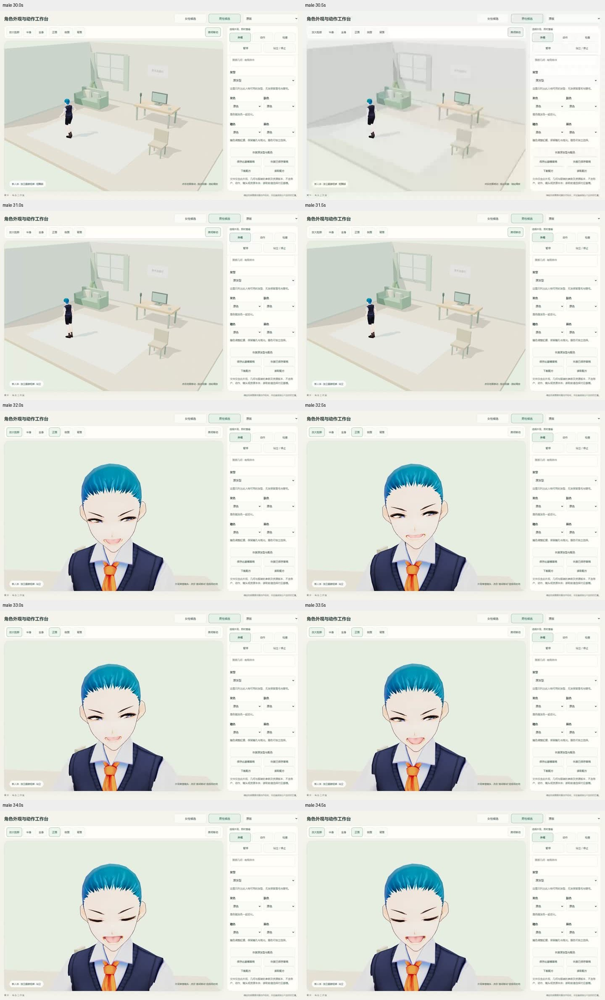
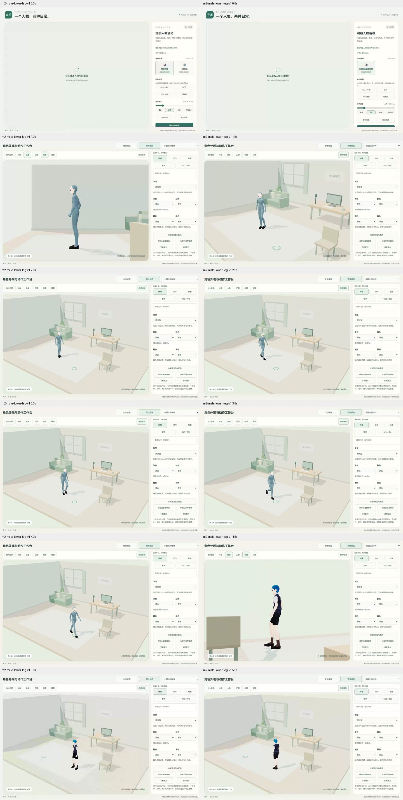
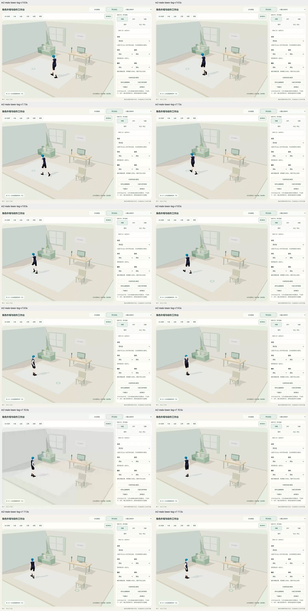
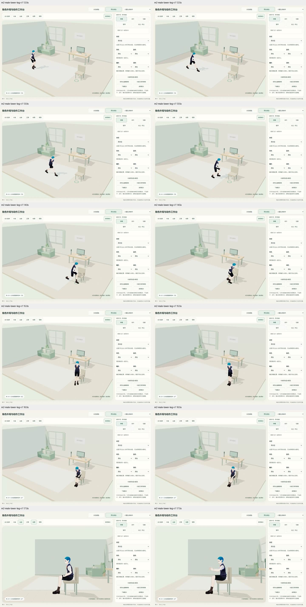
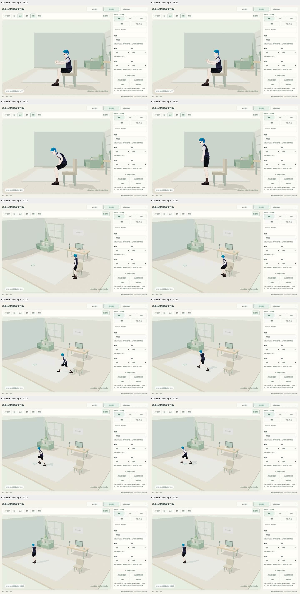
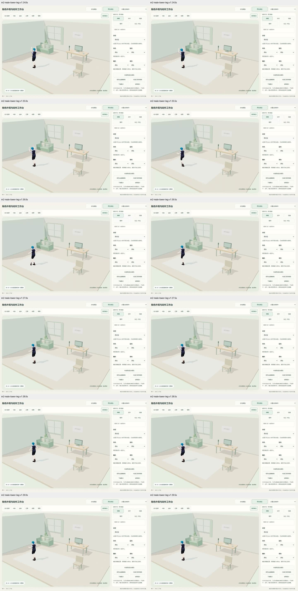
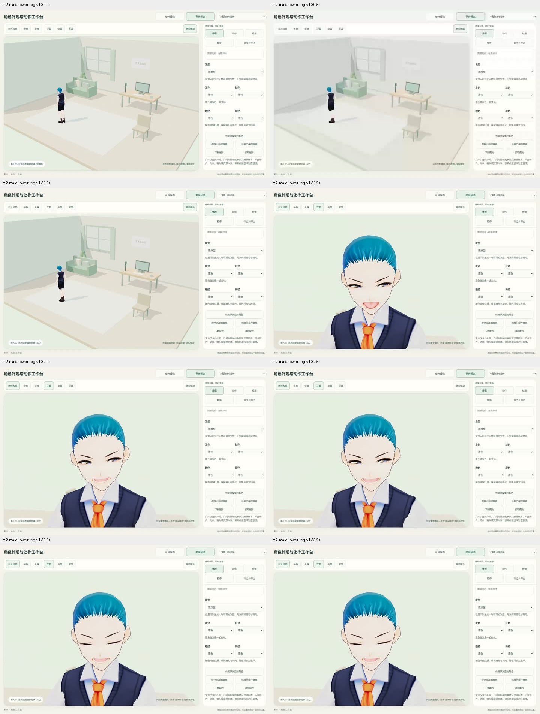